Azulejos, Cerámicas y Mosaicos.:
Ceramistas en Estaciones del Metro página mía
Rótulos de Calles
Las diez calles de Madrid con las leyendas más sorprendentes
Placas cerámicas de calles | Alfredo Ruiz de Luna
Los azulejos de Visita G en Madrid | Visita General de Regalía de Aposento | Fernando VI
Azulejos en Madrid (1)
Azulejos en Madrid (2)
Azulejos en Madrid (3)
Ruta en Madrid por las Cerámicas Monumentales de Daniel Zuloaga
Azulejos en Madrid | Estaciones de Metro
Juan Ruiz de Luna, ceramista
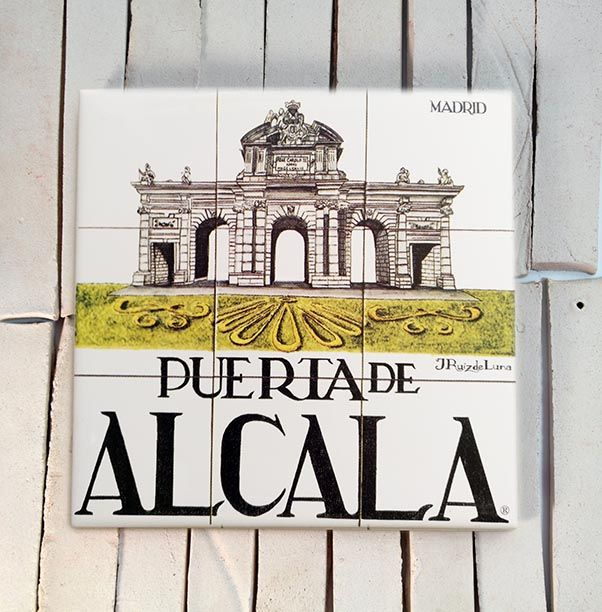
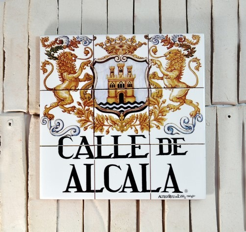
Alfredo Ruiz de Luna nieto del fundador de la saga de ceramistas comienza su trayectoria artística en la década de los 80Entre los años 1992 y 2012 , diseñó y pintó 385 de las placas cerámicas de las calles del casco histórico de Madrid.
Desde el año 1993, Juan Ruiz de Luna, biznieto del fundador de la saga y sobrino de Alfredo Ruiz de Luna continúa con la tradición familiar ceramista. En 2011 funda en colaboración con Alfredo Ruiz de Luna la empresa Las Calles del Viejo Madrid
Alfredo Ruiz de Luna tercera generación de una de las más importantes sagas familiares de ceramistas españoles.
Su abuelo, Juan Ruiz de Luna se dedicó a recuperar, junto a Enrique Guijo la tradición artística de la cerámica talaverana, una de las más populares y valoradas internacionalmente desde el siglo XVII.
 Alfredo Ruiz de Luna | Taberna de Los Gabrieles número de 17 de la calle Echegaray
Alfredo Ruiz de Luna | Taberna de Los Gabrieles número de 17 de la calle EchegarayLos murales son obra de los artistas Alfonso Romero, Enrique Guijo, Juan Ruiz de Luna y Rajel, quienes, proviniendo de Andalucía, decoraron diversos comercios madrileños en el primer tercio del siglo XX. Los artistas Guijo y Romero tenían un taller en la calle Mayor y un horno de cerámica en Carabanchel.
web.archive ->>https://caminandopormadrid.com/la-taberna-de-los-gabrieles
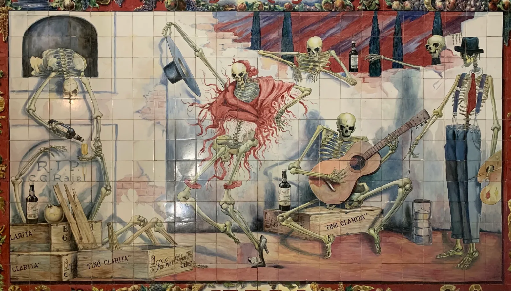
Los esqueletos de Carlos González Ragel en Los Gabrieles
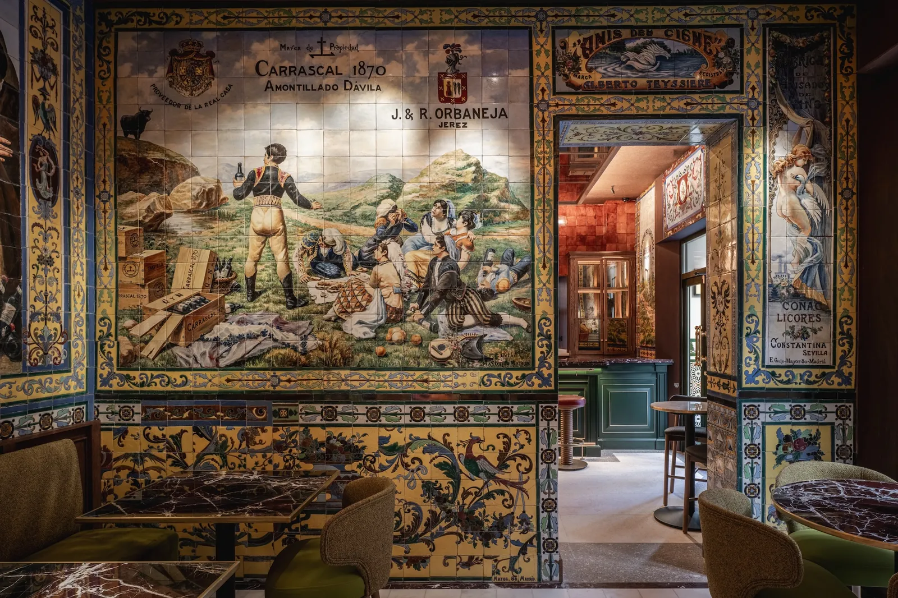
Taberna de Los Gabrieles Los Gabrieles: el ‘take away’ que conquistó Madrid en 1907
Este icono castizo ha vuelto a abrir sus puertas. Templo del flamenco y el buen vivir; sus inicios se los debemos a un periodista muy avispado.
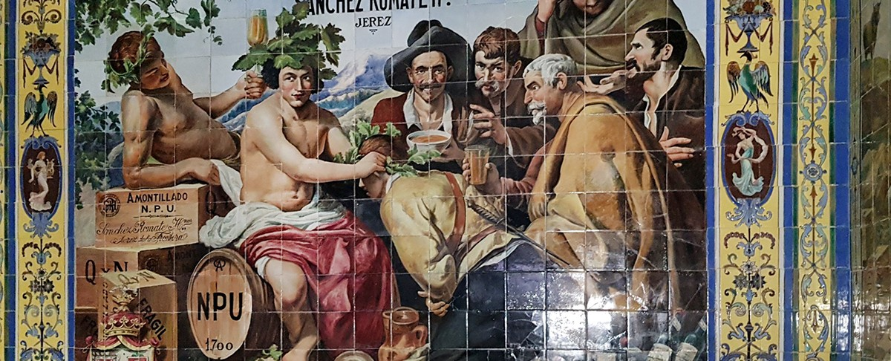
Alfredo Ruiz de Luna | Taberna de Los Gabrieles Los murales son obra de los artistas Alfonso Romero, Enrique Guijo, Juan Ruiz de Luna y Rajel que se granjearon un nombre entre los ceramistas más reputados del primer tercio del siglo XX decorando diversos comercios del Madrid más auténtico y cañí.
Alfonso Romero, pintor ceramista
Enrique Guijo, ceramista inquieto de todo arte… | Arte en Madrid
Ángel Atienza fue un destacado artista y ex futbolista español nacido en Madrid en 1931. Después de ganar cuatro Copas de Europa con el Real Madrid, dejó el fútbol para dedicarse a las artes plásticas. Se hizo famoso por crear bellos vitrales, murales, esculturas y muebles de hierro y vidrio.
Trabajó con otros artistas en la Serie murales de cerámica vidriada en Metro de Madrid, el suyo está en la estación Pueblo Nuevo (Madrid, 1977) Falleció en 2015 en Catalunya, abandonó Sudamérica para instalarse en Barcelona, buscando la mezcla de mar y montaña que ofrece la ciudad. Atienza vivia en el barrio de Nou Barris, en Torre Llobeta
Ángel Atienza GLASS MEETING sobre Ángel Atienza con Mari Carmen Atienza y Jordi Bonet - YouTube
Ángel Atienza Mural cerámico Estación Las Musas reclamado por su viuda Mari Carmen Ariznavarreta de Atienza
Ceramistas en Estaciones del Metro | Ángel Atienza
Eladio García de Santibáñez Los murales de Eladio García de Santibáñez
Ceramistas en Estaciones del Metro | Eladio García de Santibáñez

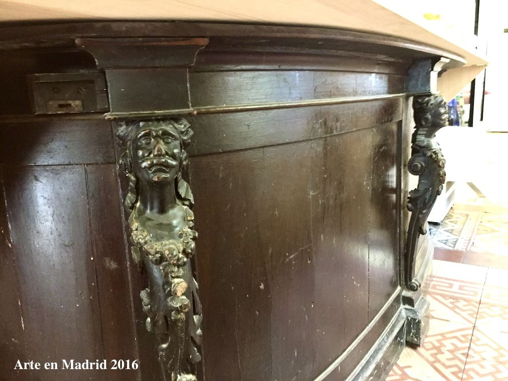
La Farmacia de Maravillas, Juanse cerámica de Enrique Guijo Calle San Andrés 3 esquina San Vicente
Enrique Guijo, ceramista La fachada de la Antigua Farmacia Juanse adornada con azulejos de cerámica diseñados por Enrique Guijo
confluencia de las calles San Andrés con San Vicente Ferrer 32 una auténtica joya del barrio de Malasaña
Enrique Guijo | Histórica Farmacia Juanse de Malasaña
Escuela de Cerámica de La Moncloa y Escuela de Arte Francisco Alcántara
Iglesia de Santa Teresa y San José y Convento de los padres Carmelitas Descalzos, 1923-1928 - Plaza España, 13 - Arquitecto: Jesús Carrasco-Muñoz Encina
A destacar su cúpula neobizantina, recubierta de azulejos, obra del siempre genial Daniel Zuloaga.
Esta es la casa del 'Ratoncito Pérez' c/ Arenal 8
Aparece en Madrid una nueva casita del Ratón Pérez calle Velázquez 13
 Parroquia de San Agustin mosaico abside de Santiago Padrós
Parroquia de San Agustin mosaico abside de Santiago Padrósvidrieras de carácter decorativo de Santiago Padrós
 Mosaico Fachada Hotel Carlton de Santiago Padros Pº Delicias 12
Mosaico Fachada Hotel Carlton de Santiago Padros Pº Delicias 12Santiago Padrós Pintor y mosaísta catalán S.XX (Mosaicos)
Santiago Padrós Indice obras
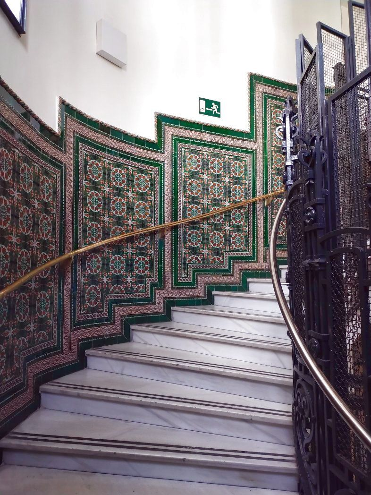
Manuel Ramos Rejano (Sevilla 1851-1922)Palacio de Comunicaciones | Palacio de Cibeles
La escalera circular interior del edificio en Cibeles que construyeron Antonio Palacios y Joaquín Otamendi para ser sede de la Sociedad de Correos y Telégrafos de España La escalera era de uso interno y está revestida de azulejos sevillanos de Manuel Ramos Rejano en su taller del Barrio de Triana.
Ceramistas en Estaciones del Metro
Ceramistas en Estaciones del Metro | Ángel Atienza
Líneas con arte: La línea 7: Historia, personajes ilustres y grandes muralistas se dan cita en la línea naranja | Metro de Madrid
Líneas con arte: la Línea 5. Los grandes muralistas de Metro recorren la línea verde junto a Mingote y Lina Morgan
Guía cultural | Metro de Madrid Mapa listado obras


Mural cerámico. Metro República Argentina
Ceramista: Miguel Durán- Lóriga prestigioso ceramista especializado en murales en arquitectura, fundador en 1952 de la fábrica cerámica Alfaraz cuya firma aparece en este mural.

Mural cerámico. Metro Manuel Becerra
Ceramista: Talleres Alfaraz mural de Alfaraz de 1979 realizado en cerámica esmaltada

Mural cerámico. Metro Cuatro Caminos
Ceramista: DNA estudio L2 mural de cemento que representa un toro


Esther García Ocampo Murales cerámicos Estación Gregorio Marañon

Santiago Uranga Mural cerámico Estación Avenida de América

La escultura de madera en la estación de Vinateros (Línea 9, Moratalaz) representa un gran tronco de madera, Obra que evoca una bodega de barriles y toneles. Está pieza forma parte de la decoración temática de la estación, rindiendo homenaje a la tradición vinicóla.
El nombre de la estación ("Vinateros") y su decoración están vinculados a la temática del vino

Luis Gordillo Mural estacion Alsacia
Mural Sueños encerrados cubre la mayor parte de las paredes, superando varias alturas. Es obra de Luis Gordillo uno de los principales referentes del arte de nuestro país, y está realizado a base de impresiones digitales de muy alta calidad

En el vestíbulo de Herrera Oria nos recibe un mural cerámico de Santiago Uranga que data de 1983 y está dedicado al mundo de la prensa, en referencia a la cercana Ciudad de los Periodistas.


Estaciones de Concha Espina
En Concha Espina están presentes dos de los grandes muralistas de Metro: Raventós y Santibáñez con un mural de pintura pétrea y cemento.

Eladio García de Santibáñez Mural cerámico Estación Las Musas
Ángel Atienza Mural cerámico Estación Las Musas reclamado por su viuda
.jpg)
Eladio García de Santibáñez creó en el plazo de una década, entre los 70 y los 80, obras de arte para 15 estaciones de Metro
Mural cerámico de Eladio García de Santibáñez en uno de los distribuidores de la estación de Avenida de América de Madrid inaugurada en 1973
.jpg)
Eladio García de Santibáñez Mural cerámico de Eladio García de Santibáñez en uno de los distribuidores de la estación de Barrio de la Concepción en la línea 7 y abierta al público en 1975, de casi 10 metros de largo


Vestíbulo de la estación de Cartagena "Por tamaño tuve que encargarlos al taller de los hermanos Atienza futbolistas del Real Madrid, que estaba en Boadilla del Monte, que ya no existe.
.jpg)
Estación de Canillejas de la línea 5 (1980)
.jpg)
Parque de las Avenidas (línea 7) de 1975

Eladio García de Santibañez retratado en 1979 junto a su pieza de Sainz de Baranda cuya parada se inauguró entonces.
Ángel Atienza Mural cerámico 1975 estación de Barrio de la Concepción reclamado por su viuda. Suyos son 9 murales y el resto hasta 14, en colaboración con Eladio García de Santibáñez (unos se firmaban y otros no

Eladio García de Santibáñez Mural Cerámica estación Laguna

Eladio García de Santibáñez Mural estacion Conde de Casal
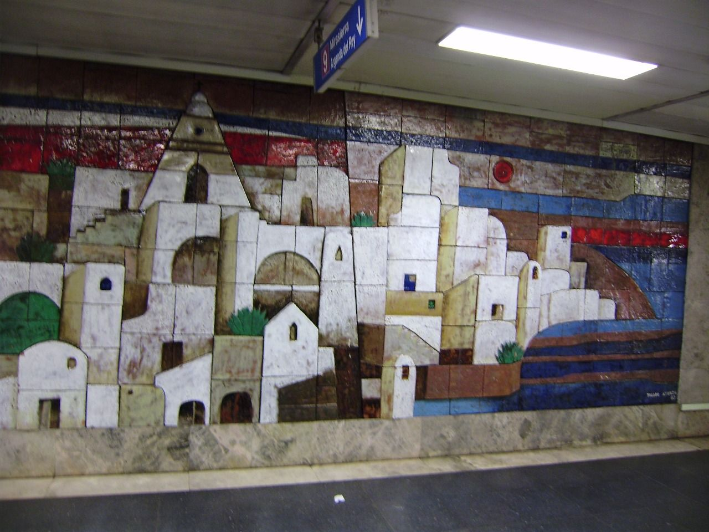
Eladio García de Santibáñez Mural estacion Ibiza
Ángel Atienza Mural cerámico estación Ibiza reclamado por su viuda
Ángel Atienza fue un destacado artista y ex futbolista español nacido en Madrid en 1931. Después de ganar cuatro Copas de Europa con el Real Madrid, dejó el fútbol para dedicarse a las artes plásticas. Se hizo famoso por crear bellos vitrales, murales, esculturas y muebles de hierro y vidrio.
Trabajó con otros artistas en la Serie murales de cerámica vidriada en Metro de Madrid, el suyo está en la estación Pueblo Nuevo (Madrid, 1977) Falleció en 2015 en Catalunya, abandonó Sudamérica para instalarse en Barcelona, buscando la mezcla de mar y montaña que ofrece la ciudad. Atienza vivia en el barrio de Nou Barris, en Torre Llobeta
Ángel Atienza instagram
Ángel Atienza Landeta GLASS MEETING sobre Ángel Atienza con Mari Carmen Atienza y Jordi Bonet

Ángel Atienza Mural cerámico Estación Pueblo Nuevo

estación Nuevos Ministerios En Nuevos Ministerios, sus dos accesos, el antiguo y el nuevo, muestran en cierto modo la evolución de la expresión artística en el metro, las primeras cerámicas y las actuales técnicas fotográficas
obra fue realizada por Alcaraz y Ángel Atienza

Eladio García de Santibáñez Mural cerámico de Eladio García de Santibáñez en uno de los distribuidores de la estación de Barrio de la Concepción en la línea 7 y abierta al público en 1975, de casi 10 metros de largo
Ángel Atienza Mural cerámico 1975 estación de Barrio de la Concepción reclamado por su viuda. Suyos son 9 murales y el resto hasta 14, en colaboración con Eladio García de Santibáñez (unos se firmaban y otros no
Vestíbulo de la estación de Cartagena "Por tamaño tuve que encargarlos al taller de los hermanos Atienza futbolistas del Real Madrid, que estaba en Boadilla del Monte, que ya no existe.
Eladio García de Santibáñez Mural estacion Ibiza
Ángel Atienza Mural cerámico 1983 estación Ibiza reclamado por su viuda
Ángel Atienza Mural cerámico Estación Ibiza youtube.com
Forjados | cerrajería | Fundido en Bronce.:

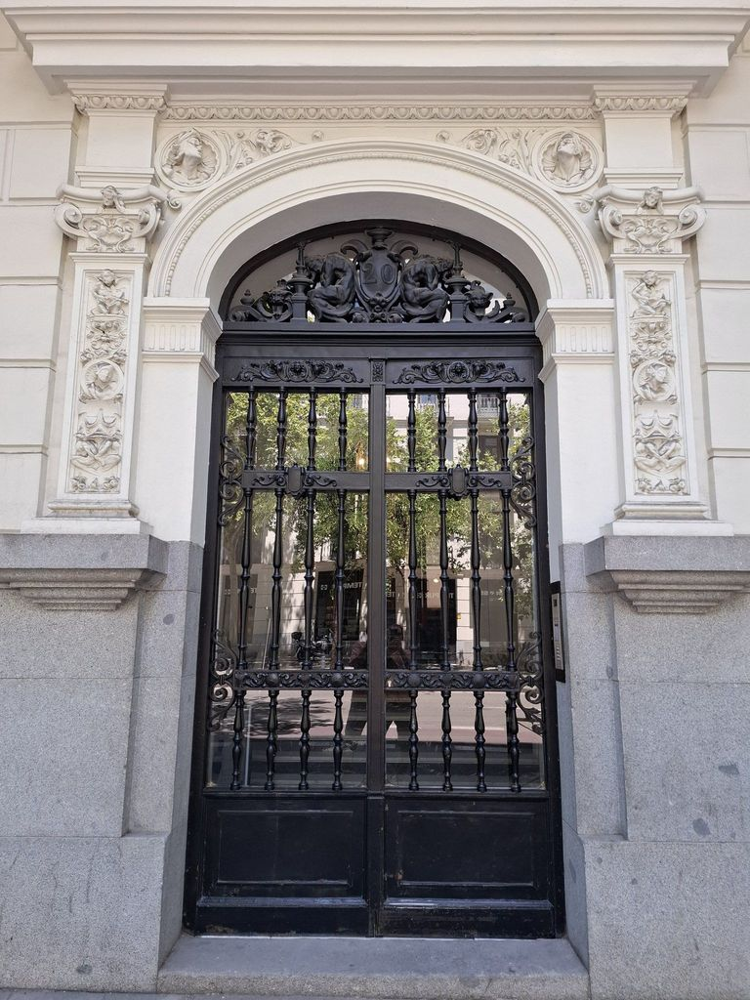
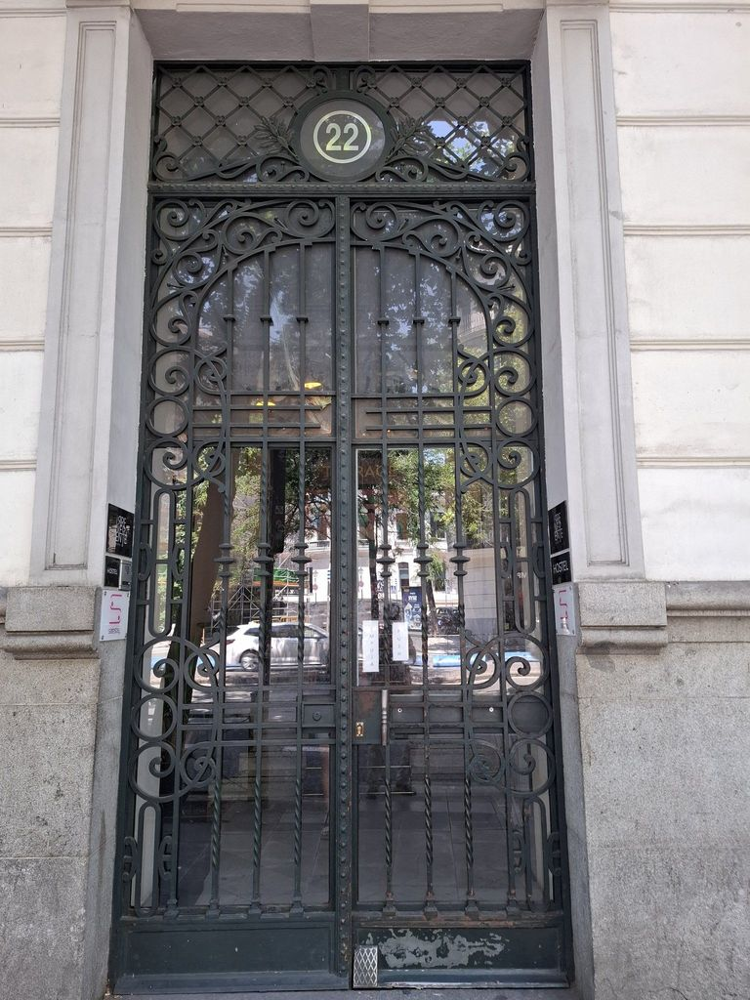
Puertas de entrada a los edificios de Sagasta 16, 20 y 22. Interesantes decoraciones en fachada y en las propias puertas de hierro en estilos neobarroco, neorrenacentista y modernista, repect. de los arq. Gambra (16) e Iradier(20), desconozco el del n° 22.
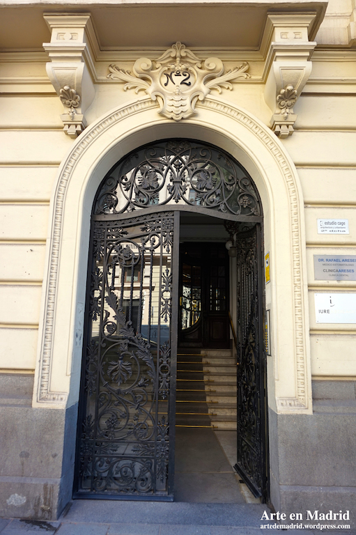
Edificio de viviendas proyectado en 1900 por el arquitecto Luis Bellido para su hermano Manuel Almagro 2 esq plza de Alonso Martínez (Chamberi)
Es una de las casas de alquiler artísticas, como dijo Luis S. de los Terreros, que se construyeron en Madrid en los primeros años del siglo XX
Destaca la cerrajería realizada en los talleres de Casa Asins de la que se conserva la exquisita puerta de entrada.
Casa Asins (Bernardo, hijo Gabriel y nieto Gabriel) | Arte en Madrid
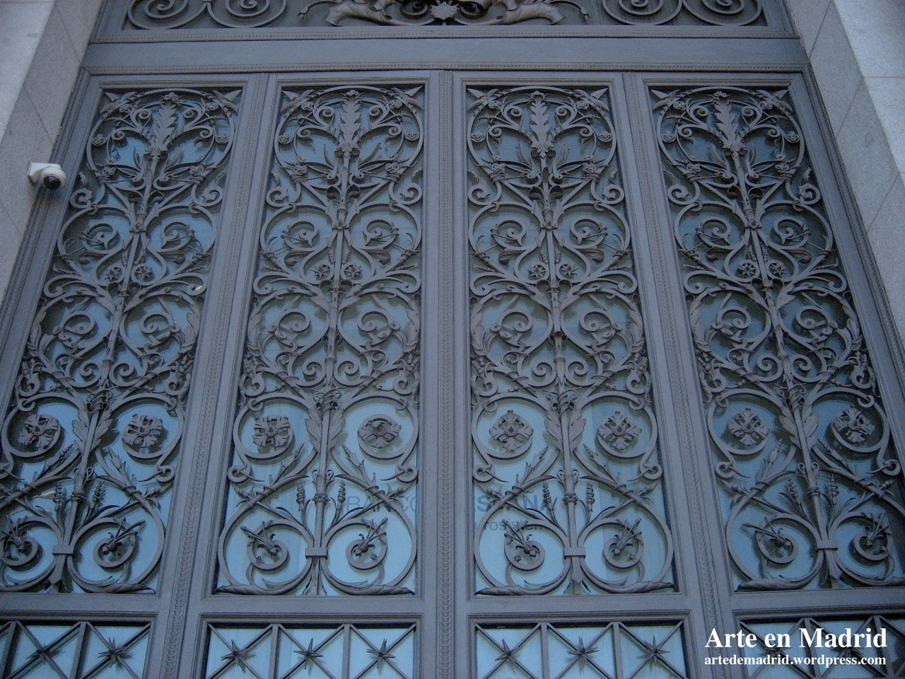
Fabricó las puertas de las cuatro fachadas del Banco de España y demás elementos de hierro, modelo del arquitecto Eduardo de Adaro.
Biblioteca del Casino de Madrid, Alcalá 15 con José López Sallaberry Asins construyó la Biblioteca en estilo gótico.
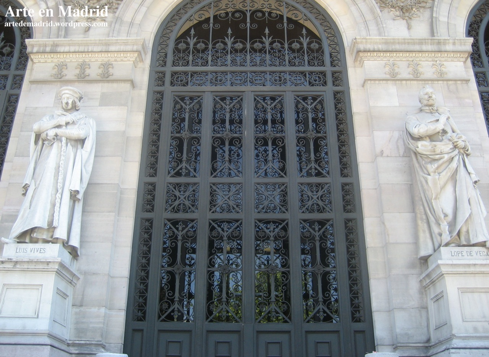
Biblioteca Nacional en el Paseo de Recoletos
Biblioteca del Senado, construida en 1882 en estilo neogótico obra de Bernardo Asins, bajo la dirección del arquitecto Emilio Rodríguez Ayuso.
Biblioteca y el Museo Arqueológico Nacional, consistentes en puertas, verjas, cubiertas de patios, y el gran depósito de libros de la biblioteca.
Iglesia de San Vicente de Paul conserva la verja de estilo gótico allí forjada, según diseño de Juan Bautista Lázaro.
Antiguo MInisterio de Fomento, en Atocha.
San Francisco el Grande
Otras obras fueron la fachada del Banco de Bilbao en la calle de Sevilla con Ricardo de Bastida Bilbao en los primeros años 20, las puertas y rejas del Círculo de la Unión Mercantil en la Gran Vía 24. Escaleras, ventanas, persianas, etc. para el Banco Hispano Americano y para el Crédit Lyonnais. La verja de la Catedral de la Almudena
la puerta monumental del Palacio de Justicia.
Encargado de la construcción del Palacio de Velázquez En 1887 se adjudicaron a la Casa Asins las obras para la realización del Pabellon de hierro y cristal que habría de albergar la Exposición de Filipinas en el Parque del Retiro, el Palacio de Cristal quizá su obra más grandiosa. Ambos edificios, obra de Ricardo Velázquez Bosco.
Con Antonio Palacios trabajó en la construcción del Banco del Río de la Plata hoy sede del Instituto Cervantes la cual comenzó en 1910, y probablemente en los demás edificios que este arquitecto construyó, como el cercano Palacio de Comunicaciones
Palacios como anteriormente Velázquez Bosco arquitecto que ejerció una gran influencia sobre él, supo unir a la perfección las artes decorativas y la arquitectura: la cerámica de Daniel Zuloaga la escultura de Ángel García Díaz y la cerrajería de Gabriel Asins antes de Bernardo
obra de su bisnieta Elena Asins (1940-2015)
Elena Asins (1940-2015). Pionera del arte conceptual en España
El Arte del Fundido en Bronce
Entre los procedimientos empleados desde los tiempos más remotos se encuentra la fundición a la cera perdida
Son varias las empresas que se dedican a esta tarea en Madrid. Arte 6 nacida en 1994, creadora de obras emblemáticas como El Abrazo de Juan Genovés ubicada en la plaza de Antón Martín
Capa Escultura empresa familiar, fundada en 1958 por Eduardo Capa
Por citar una de sus obras recientes, de sus hornos salió la espectacular Puerta de la Ampliación del Prado, de Cristina Iglesias Ambas fundiciones se encuentran en Arganda del Rey La más antigua es la Fundición Codina Ha cumplido 120 años.
 La pamela, La mariposa, Los aretes, La diadema, La doble imagen y Mariposas | Fundición Capa esculturas | Manolo Valdés
La pamela, La mariposa, Los aretes, La diadema, La doble imagen y Mariposas | Fundición Capa esculturas | Manolo ValdésCiudad de las Artes y las Ciencias, Valencia
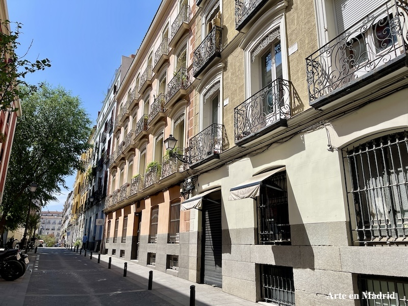
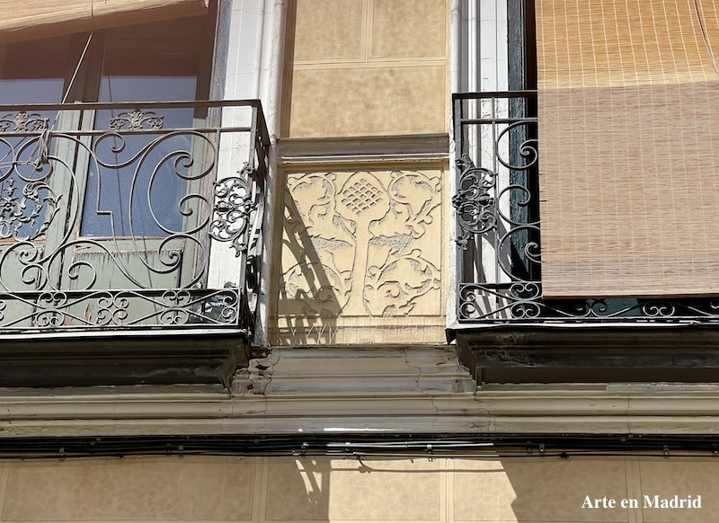
La rejería, los esgrafiados, etc.Tomás de Miguel, Maestro Herrero calle de San Gregorio.
Tomás de Miguel El Vizcaíno fue un gran artista, el último Maestro Herrero y Cerrajero del Ayuntamiento de Madrid antes de que desapareciera este cargo.
Vidrieras.:
Vidriera de hormigón (Dalle de Verre) | Vitralls Bonet Las vidrieras de hormigón se construyen con piezas de vidrio de 25mm rodeadas de cemento. Los paneles disponen además de una estructura interna metálica. La vidriera de hormigón empezó a usarse en 1920 pero no se popularizó su uso hasta los años 50 y grandes arquitectos, artesanos y artistas la emplearon.
Este tipo de vidriera también llamado Dalle de Verre permite construir sólidos cerramientos, el grosor de las piezas de vidrio crea juegos de luz de intensidad

Iglesia de Santa María del Monte Carmelo c/ de Ayala 37
Vidrieras.: Manuel Sánchez Molezún
Banco de España | Escalera Imperial y sus vidrieras de estilo simbolista
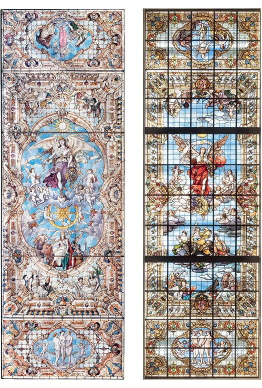
vidrieras de estilo simbolista que diseñó para el edificio la Casa Mayer de Múnich, uno de los talleres de vitrales más prestigioso en la Europa de la segunda mitad del siglo XIX y cuya abundante producción de obras destinadas a España
Manolo Laguillo. Vidriera de la Casa Mayer del techo de la caja de escalera con la diosa Fortuna rodeada por los cinco continentes, las Tres Gracias y las Parcas Serie Adaro: un estudio de caso (2021). Colección Banco de España
La diosa Fortuna, deidad romana asociada al azar, a la buena y mala suerte, preside la gran vidriera que se halla sobre el hueco de la escalera, donde a su vez se representa el mito de «El Rapto de Europa», alegorías de los otros cuatros continentes y, en sus dos extremos, las Tres Gracias y las Parcas.
Boceto preparatorio para la vidriera de la Fortuna. Mayer’sche Hofkunstanstalt GmbH - Archivo Casa Mayer Múnich Vidriera de la Fortuna que cubre la escalera principal del Banco de España
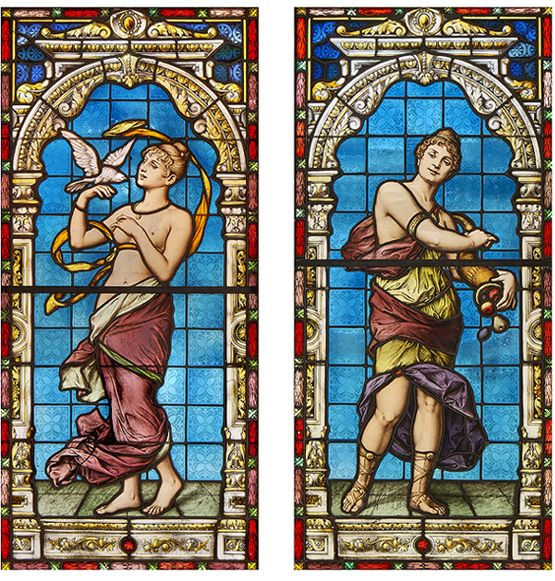
Amor y Felicitas (1890) Casa Mayer
Fue la Casa Mayer que contaba con un taller de vitrales en Múnich desde 1862, la firma encargada de realizar estas vidrieras.
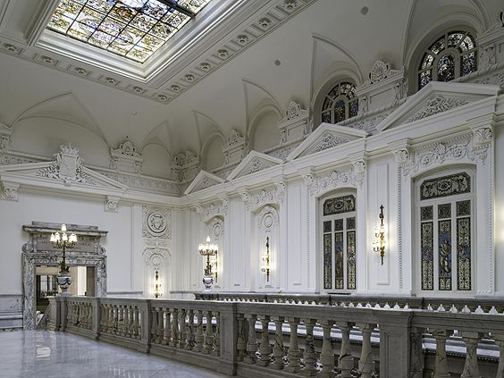
Escalera imperial de la sede central del Banco de España
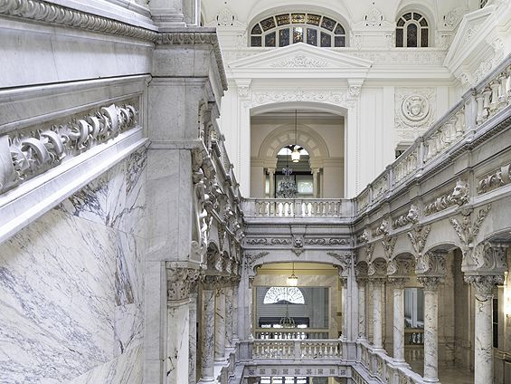
Escalera imperial desde la rotonda que actualmente conecta el edificio del siglo XIX con la ampliación de Yarnoz.
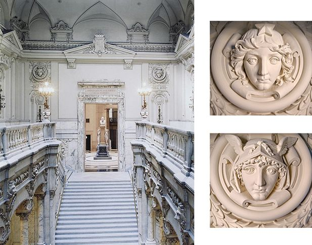
Escalera del Banco de España | Medallones en yeso de la diosa Fortuna y el dios Mercurio situados en la escalera principal

Banco de España | vidriera del Patio de Operaciones
Primero, para el edificio primitivo se realizó un ciclo por la Casa Mayer de Múnich. Posteriormente en la ampliación proyectada por Yarnoz la Casa Maumejean realizó uno de los conjuntos de vidrieras art déco más relevantes de Europa.

Banco de España abre sus puertas para mostrar su patrimonio | Traveler
Banco de España Sucesivas ampliaciones -fcoam.eu
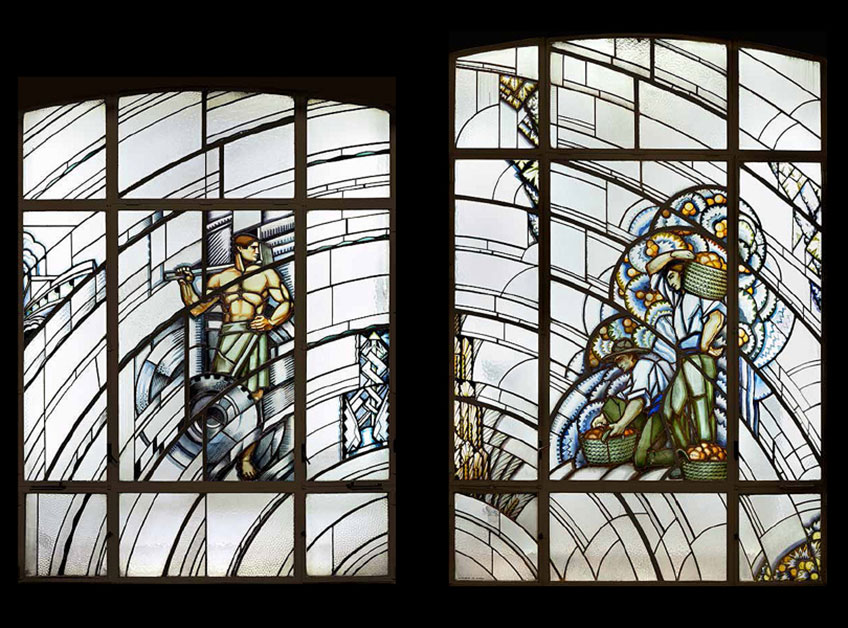
Alberto Martorell. Maumejean Hermanos, Madrid. Pastoreo, c. 1932
Alegoría de la Indrustria y de la Agricultura 1934-1935 Vidrios esmaltados e impresos y metal.
Las vidrieras del taller Maumejean Hermanos uno de los conjuntos decorativos más emblemáticos del art déco institucional europeo del pasado siglo - Colección Banco de España
Vidrieras Madrileñas - siglos XIX y XX - Cuarta Parte | PPT
Casa Palacio de Tomás de Allende Calle Mayor 72
(No confundir con Casa Allende en plza Canalejas) mismo dueño
construida en 1864, sede de la Junta Municipal del Distrito Centro
vidrieras de la Casa Mauméjean
Casa Palacio de Tomás de Allende Calle Mayor 72 -youtube
Palacios de Velázquez y Cristal obra de Ricardo Velázquez Bosco
Ambas construcciones están inspiradas en el Crystal Palace de Londres
Escuela de Ingenieros de Minas y Energía.: Escalera, el Museo Histórico Minero Don Felipe de Borbón y Grecia —una extraordinaria colección de minerales, fósiles, piezas de arqueología minera y diferentes instrumentos—, el claustro, la Biblioteca Histórica, y el Salón de Actos, sala que conserva vidrieras de la casa Maumejean, lámparas Art Nouveau y diferentes estucos.
Con cerámica de las fachadas laterales, obra de Daniel Zuloaga
Palacio Longoria La cúpula de vidrio emplomado que hace de lucernario, obra de la prestigiosa empresa francesa Maumejean
José y Enrique Mauméjean Vidrieros PDF
1901, el taller se trasladó a unas instalaciones propias mucho más amplias y lujosas, situadas en el paseo de la Castellana, donde permaneció hasta la década de 1930, cuando se reubicó en la calle Zabaleta.
Joseph Jules Mauméjean | casa de vidriería artística | Real Academia de la Historia
Ángel Atienza · Taller ATIENZA de Boadilla del Monte, 1973
Ángel Atienza · Taller ATIENZA de Boadilla del Monte, 1973 -instagram
Ángel Atienza · Taller ATIENZA Luis Calero - Dabadaba Madrid - YouTube
Ángel Atienza · Taller ATIENZA GLASS MEETING sobre Ángel Atienza con Mari Carmen Atienza y Jordi Bonet - YouTube


Ángel Atienza · Taller ATIENZA En la vidriera superior, sobre las puertas de acceso, aparece en un gran rectángulo el sueño de Don Bosco de las "Dos columnas: la nave de la Iglesia entre la Eucaristía y María Auxiliadora".
A la izquierda: columna en azul con círculos concéntricos. Entre ellos uvas y espigas (Eucaristía)
A la derecha: María-columna en azul; un corazón sobre rosa y rayos de luz blanca
Basílica Parroquia de María Auxiliadora Ronda de Atocha, 25

Ángel Atienza · Taller ATIENZA Vidrieras Basílica Parroquia de María Auxiliadora
ARCOVE Asociación para la Restauración-Conservación de Vidrieras de España
ARCOVE Noticias